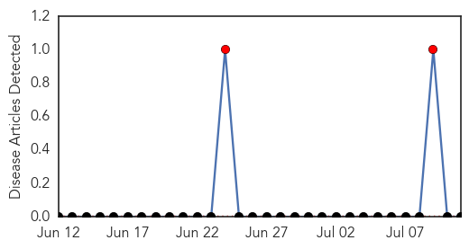
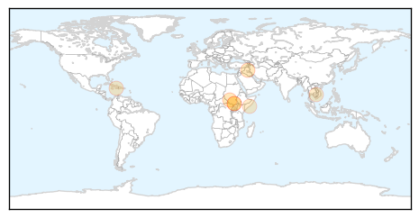

Bubonic Plague
30-Day Web Trend
30 alerts, 0 warnings

30-Day Twitter Trend
0 alerts, 0 warnings

Article Locations

Article Confidences

Top Articles:
-
No articles found for Jul 11, 2014
Top Tweets:
-
No tweets found for Jul 11, 2014
Cholera
30-Day Web Trend
0 alerts, 0 warnings

30-Day Twitter Trend
0 alerts, 0 warnings

Article Locations
Article Confidences

Top Articles:
- 0.829
- South Sudan facing cholera threat - Africa
- 0.805
- Médecins Sans Frontières Ireland
- 0.797
- South Sudan Crisis Situation Report No. 44 (as of 10 July 2014) - South Sudan
- 0.679
- Living Conditions in Haiti’s Capital Improve, but Rural Communities Remain Very Poor
- 0.634
- Time to Put the Spotlight on South Sudan
- 0.632
- Médecins Sans Frontières Ireland
- 0.632
- Médecins Sans Frontières Ireland
- 0.632
- Médecins Sans Frontières Ireland
Top Tweets:
-
No tweets found for Jul 11, 2014